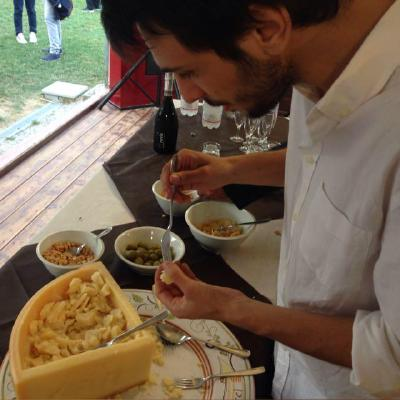
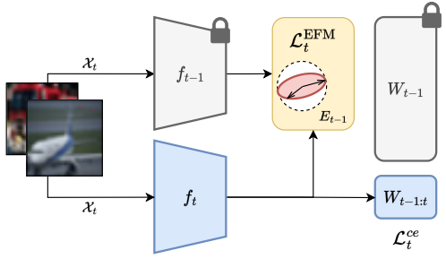
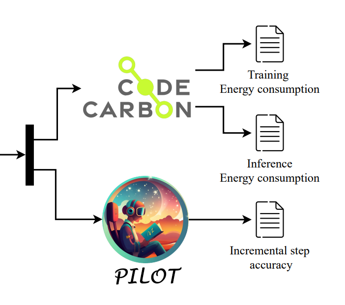
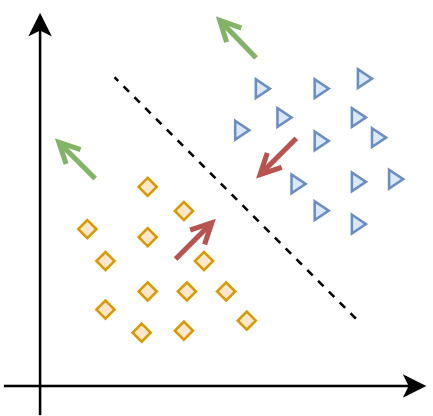
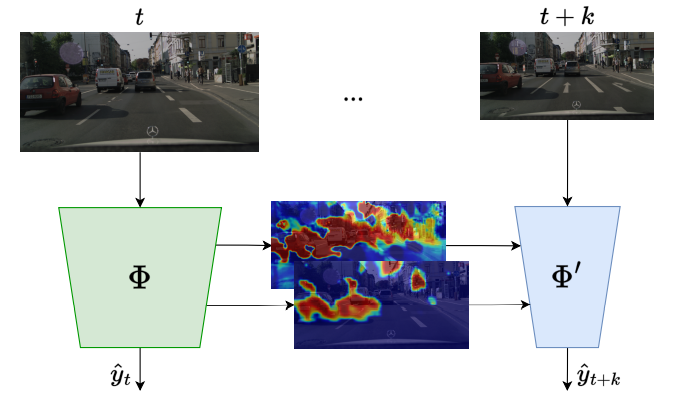

<!DOCTYPE html>
<html lang="en">
<head>
    <meta charset="UTF-8">
    <meta name="viewport" content="width=device-width, initial-scale=1.0">
    <title>Tomaso Trinci</title>
    
    <script src="https://cdn.tailwindcss.com"></script>
    
    <script src="https://cdn.jsdelivr.net/npm/marked/marked.min.js"></script>
    
    <link rel="preconnect" href="https://fonts.googleapis.com">
    <link rel="preconnect" href="https://fonts.gstatic.com" crossorigin>
    <link href="https://fonts.googleapis.com/css2?family=Inter:wght@400;500;700&display=swap" rel="stylesheet">

    <style>
        /* Use the Inter font family */
        body {
            font-family: 'Inter', sans-serif;
            scroll-behavior: smooth; /* Smooth scrolling for anchor links */
        }
        /* A simple fade-in animation for page content */
        .page-content {
            animation: fadeIn 0.5s ease-in-out;
        }
        @keyframes fadeIn {
            from { opacity: 0; transform: translateY(10px); }
            to { opacity: 1; transform: translateY(0); }
        }
        /* Basic styling for rendered Markdown content */
        .prose h1, .prose h2, .prose h3 {
            font-weight: 700;
            margin-bottom: 0.5em;
            margin-top: 1em;
        }
        .prose h1 { font-size: 2.25rem; }
        .prose h2 { font-size: 1.875rem; }
        .prose h3 { font-size: 1.5rem; }
        .prose p {
            margin-bottom: 1em;
            line-height: 1.6;
        }
        .prose a {
            color: #2563eb; /* blue-600 */
            text-decoration: underline;
        }
        .prose ul {
            list-style-type: disc;
            padding-left: 1.5em;
            margin-bottom: 1em;
        }
        .prose pre {
            background-color: #f3f4f6; /* gray-100 */
            padding: 1em;
            border-radius: 0.5rem;
            overflow-x: auto;
        }
        .prose code {
            font-family: monospace;
        }
    </style>
</head>
<body class="bg-gray-50 text-gray-800">

    <header class="bg-white/80 backdrop-blur-md sticky top-0 z-50 border-b border-gray-200">
        <nav class="container mx-auto px-4 sm:px-6 lg:px-8 py-4 flex justify-between items-center">
            <a href="#home" class="nav-link text-xl font-bold text-gray-900">Tomaso Trinci</a>
            
            <div class="hidden md:flex space-x-6">
                <a href="#home" class="nav-link text-gray-600 hover:text-blue-600 transition-colors">Home</a>
                <a href="#blog" class="nav-link text-gray-600 hover:text-blue-600 transition-colors">Blog</a>
                <a href="#publications" class="nav-link text-gray-600 hover:text-blue-600 transition-colors">Publications</a>
            </div>

            <button id="menu-btn" class="md:hidden block text-gray-800 focus:outline-none">
                <svg class="w-6 h-6" fill="none" stroke="currentColor" viewBox="0 0 24 24" xmlns="http://www.w3.org/2000/svg">
                    <path stroke-linecap="round" stroke-linejoin="round" stroke-width="2" d="M4 6h16M4 12h16m-7 6h7"></path>
                </svg>
            </button>
        </nav>

        <div id="mobile-menu" class="hidden md:hidden">
            <a href="#home" class="mobile-nav-link block py-2 px-4 text-sm text-gray-600 hover:bg-gray-100">Home</a>
            <a href="#blog" class="mobile-nav-link block py-2 px-4 text-sm text-gray-600 hover:bg-gray-100">Blog</a>
            <a href="#publications" class="mobile-nav-link block py-2 px-4 text-sm text-gray-600 hover:bg-gray-100">Publications</a>
        </div>
    </header>

    <div class="container mx-auto px-4 sm:px-6 lg:px-8 py-8 sm:py-12">

        <main id="home" class="page-content">
            <div class="flex flex-col md:flex-row items-center text-center md:text-left gap-8 md:gap-12">
                <div class="flex-shrink-0">
                    
                </div>
                <div>
                    <h1 class="text-3xl sm:text-4xl font-bold text-gray-900">Hello, visitor! &#1F596;</h1>
                    <p class="mt-4 text-lg text-gray-600">
                        I am a Data Scientist at <a href="https://www.verizonconnect.com/" class="underline text-blue-600 hover:text-blue-800">Verizon Connect</a> in Florence.
                        I kicked things off at <a href="https://www.reply.com/target-reply/en" class="underline text-blue-600 hover:text-blue-800">Target Reply</a> in Milan before coming back here to get my Ph.D. in Machine Learning working at the <a href="https://webgol.dinfo.unifi.it/" class="underline text-blue-600 hover:text-blue-800">Global Optimization Laboratory</a>.
                        I'm sticking around Florence and now work at Verizon. My background is a mix of Math and Computer Engineering. These days, I'm really into computer vision, intelligent vehicle applications, and multimodal models. In the past, I've also spent time working on continual learning and sustainable AI.

                        I know next to nothing about front-end. This page was realized by simply vibing with Gemini &#1F916;.
                    </p>
                    <div class="mt-6 flex space-x-4 justify-center md:justify-start">
                        <a href="mailto:tomaso.trinci90@gmail.com" class="text-blue-600 hover:underline">Email</a>
                        <a href="https://github.com/CodingTomo" class="text-blue-600 hover:underline">GitHub</a>
                        <a href="https://it.linkedin.com/in/tomasotrinci" class="text-blue-600 hover:underline">LinkedIn</a>
                        <a href="https://bsky.app/profile/tomo-90.bsky.social" class="text-blue-600 hover:underline">Bluesky</a>
                    </div>
                </div>
            </div>
        </main>

        <main id="blog" class="page-content hidden">
            <div id="blog-list-container">
                <h1 class="text-3xl sm:text-4xl font-bold text-gray-900 mb-8">Blog</h1>
                <div id="blog-list" class="space-y-12">
                    </div>
            </div>
            <div id="blog-post-container" class="hidden">
                 <button id="back-to-blog" class="mb-8 text-blue-600 hover:underline">&larr; Back to Blog List</button>
                 <div id="blog-post-content" class="prose max-w-none"></div>
            </div>
        </main>

        <main id="publications" class="page-content hidden">
            <h1 class="text-3xl sm:text-4xl font-bold text-gray-900 mb-8">Publications</h1>
            <div class="space-y-8">
                <div class="p-6 bg-white rounded-lg shadow-md flex flex-col sm:flex-row items-center sm:items-start text-center sm:text-left gap-6">
                    
                    <div>
                        <h3 class="font-bold text-lg text-gray-900">EFC++: Elastic Feature Consolidation with Prototype Re-balancing for Cold Start Exemplar-free Incremental Learning</h3>
                        <p class="mt-1 text-gray-600">S. Magistri, <strong>T. Trinci</strong>, A. Soutif-Cormerais, J. van de Weijer, A.D. Bagdanov (2025).</p>
                        <p class="mt-1 text-gray-500 italic">[Under Review since July 2024]</p>
                        <div class="mt-3 space-x-4">
                            <a href="https://arxiv.org/pdf/2503.10439" class="text-blue-600 hover:underline">[PDF]</a>
                            <a href="https://github.com/simomagi/elastic_feature_consolidation" class="text-blue-600 hover:underline">[Code]</a>
                        </div>
                    </div>
                </div>
            
                <div class="p-6 bg-white rounded-lg shadow-md flex flex-col sm:flex-row items-center sm:items-start text-center sm:text-left gap-6">
                    
                    <div>
                        <h3 class="font-bold text-lg text-gray-900">How green is continual learning, really? Analyzing the energy consumption in continual training of vision foundation models</h3>
                        <p class="mt-1 text-gray-600"><strong>T. Trinci</strong>, S. Magistri, R. Verdecchia, A.D. Bagdanov. (2024).</p>
                        <p class="mt-1 text-gray-500 italic">Computer Vision – ECCV 2024 Workshops, Part XXII, pp. 300-317.</p>
                        <div class="mt-3 space-x-4">
                            <a href="https://arxiv.org/pdf/2409.18664" class="text-blue-600 hover:underline">[PDF]</a>
                            <a href="https://github.com/CodingTomo/how-green-continual-learning" class="text-blue-600 hover:underline">[Code]</a>
                        </div>
                    </div>
                </div>

                <div class="p-6 bg-white rounded-lg shadow-md flex flex-col sm:flex-row items-center sm:items-start text-center sm:text-left gap-6">
                    
                    <div>
                        <h3 class="font-bold text-lg text-gray-900">Elastic feature consolidation for cold start exemplar-free incremental learning</h3>
                        <p class="mt-1 text-gray-600">S. Magistri, <strong>T. Trinci</strong>, A. Soutif-Cormerais, J. van de Weijer, A.D. Bagdanov (2024).</p>
                        <p class="mt-1 text-gray-500 italic">The Twelfth International Conference on Learning Representations (ICLR).</p>
                        <div class="mt-3 space-x-4">
                            <a href="https://openreview.net/forum?id=7D9X2cFnt1" class="text-blue-600 hover:underline">[PDF]</a>
                            <a href="https://github.com/simomagi/elastic_feature_consolidation" class="text-blue-600 hover:underline">[Code]</a>
                        </div>
                    </div>
                </div>

                <div class="p-6 bg-white rounded-lg shadow-md flex flex-col sm:flex-row items-center sm:items-start text-center sm:text-left gap-6">
                    
                    <div>
                        <h3 class="font-bold text-lg text-gray-900">Cross-Model Temporal Cooperation Via Saliency Maps for Efficient Recognition and Classification of Relevant Traffic Lights</h3>
                        <p class="mt-1 text-gray-600"><strong>T. Trinci</strong>, T. Bianconcini, L. Sarti, L. Taccari, F. Sambo. (2023).</p>
                        <p class="mt-1 text-gray-500 italic">International Conference on Intelligent Transportation Systems (ITSC), pp. 2758-2763.</p>
                        <div class="mt-3 space-x-4">
                            <a href="https://ieeexplore.ieee.org/abstract/document/10421938" class="text-blue-600 hover:underline">[PDF]</a>
                            <a href="https://github.com/CodingTomo/traffic-light-relevance-annotation" class="text-blue-600 hover:underline">[Code]</a>
                        </div>
                    </div>
                </div>
            </div>

            <h1 class="text-3xl sm:text-4xl font-bold text-gray-900 mb-8 mt-16">Patents</h1>
            <div class="space-y-8">
                <div class="p-6 bg-white rounded-lg shadow-md flex flex-col sm:flex-row items-center sm:items-start text-center sm:text-left gap-6">
                    
                    <div>
                        <h3 class="font-bold text-lg text-gray-900">Systems and methods for reducing power consumption of executing learning models in vehicle systems</h3>
                        <p class="mt-1 text-gray-600"><strong>T. Trinci</strong>, T. Bianconcini, L. Sarti, L. Taccari, F. Sambo. (2024).</p>
                        <p class="mt-1 text-gray-500 italic">US Patent App. 18/334, 840.</p>
                        <div class="mt-3 space-x-4">
                            <a href="https://patents.google.com/patent/US20240420460A1/en" class="text-blue-600 hover:underline">[PDF]</a>
                        </div>
                    </div>
                </div>
            </div>
        </main>

    </div>

    <footer class="bg-white border-t border-gray-200 mt-8 sm:mt-12">
        <div class="container mx-auto px-4 sm:px-6 lg:px-8 py-4 text-center text-gray-500 text-sm">&copy; 2025 Tomaso Trinci. All Rights Reserved.</div>
    </footer>

    <script>
        document.addEventListener('DOMContentLoaded', () => {
            const pages = document.querySelectorAll('.page-content');
            const navLinks = document.querySelectorAll('.nav-link');
            const mobileNavLinks = document.querySelectorAll('.mobile-nav-link');
            const menuBtn = document.getElementById('menu-btn');
            const mobileMenu = document.getElementById('mobile-menu');
            
            const blogListContainer = document.getElementById('blog-list-container');
            const blogPostContainer = document.getElementById('blog-post-container');
            const blogList = document.getElementById('blog-list');
            const blogPostContent = document.getElementById('blog-post-content');
            const backToBlogBtn = document.getElementById('back-to-blog');
            
            // --- Mobile Menu Toggle ---
            menuBtn.addEventListener('click', () => {
                mobileMenu.classList.toggle('hidden');
            });
            
            // Close mobile menu when a link is clicked
            function closeMobileMenu() {
                mobileMenu.classList.add('hidden');
            }
            mobileNavLinks.forEach(link => link.addEventListener('click', closeMobileMenu));

            // =================================================================
            // HOW TO ADD A NEW BLOG POST:
            // 1. Create a new .md file in a 'posts' folder (e.g., /posts/my-new-post.md)
            // 2. Add a new object to the `blogPosts` array below.
            // =================================================================
            const blogPosts = [
                {
                    slug: 'my-first-post',
                    title: 'My First Blog Post',
                    date: 'July 13, 2025',
                    description: 'This is a short summary of the first post, which is written in Markdown! This makes writing content much easier.',
                    path: 'posts/my-first-post.md'
                },
                {
                    slug: 'exploring-new-tech',
                    title: 'Exploring New Technologies',
                    date: 'June 28, 2025',
                    description: 'A look into some new and exciting technologies. This post also demonstrates the power of Markdown for technical writing.',
                    path: 'posts/exploring-new-tech.md'
                }
            ];

            // --- Function to render the list of blog posts ---
            function renderBlogList() {
                blogList.innerHTML = ''; // Clear existing list
                blogPosts.forEach(post => {
                    const article = document.createElement('article');
                    article.innerHTML = `
                        <h2 class="text-2xl font-bold text-gray-900">
                            <a href="#blog/${post.slug}" class="hover:text-blue-600 post-link">${post.title}</a>
                        </h2>
                        <p class="text-sm text-gray-500 mt-1">${post.date}</p>
                        <p class="mt-3 text-gray-600">${post.description}</p>
                        <a href="#blog/${post.slug}" class="text-blue-600 hover:underline mt-4 inline-block post-link">Read More &rarr;</a>
                    `;
                    blogList.appendChild(article);
                });

                // Add event listeners to the new links
                document.querySelectorAll('.post-link').forEach(link => {
                    link.addEventListener('click', handleRouting);
                });
            }

            // --- Function to fetch and render a single blog post ---
            async function renderBlogPost(slug) {
                const post = blogPosts.find(p => p.slug === slug);
                if (!post) {
                    blogPostContent.innerHTML = '<p>Post not found.</p>';
                    return;
                }

                try {
                    const response = await fetch(post.path);
                    if (!response.ok) {
                        throw new Error(`Could not fetch ${post.path}. Make sure the file exists.`);
                    }
                    const markdown = await response.text();
                    blogPostContent.innerHTML = marked.parse(markdown);
                } catch (error) {
                    console.error('Error fetching post:', error);
                    blogPostContent.innerHTML = `<p class="text-red-500">Error: Could not load blog post. Check the console for details.</p>`;
                }
            }

            // --- Main page navigation and routing logic ---
            function showPage(pageId) {
                pages.forEach(page => {
                    page.classList.toggle('hidden', page.id !== pageId);
                });
                window.scrollTo(0, 0); // Scroll to top on page change
            }
            
            function handleRouting() {
                const hash = window.location.hash || '#home';
                
                if (hash.startsWith('#blog/')) {
                    const slug = hash.substring(6); // Get slug from '#blog/slug'
                    showPage('blog');
                    blogListContainer.classList.add('hidden');
                    blogPostContainer.classList.remove('hidden');
                    renderBlogPost(slug);
                } else if (hash === '#blog') {
                    showPage('blog');
                    blogListContainer.classList.remove('hidden');
                    blogPostContainer.classList.add('hidden');
                    renderBlogList(); // Render the list every time we navigate to the blog page
                } else {
                    const pageId = hash.substring(1) || 'home';
                    showPage(pageId);
                }
                closeMobileMenu(); // Close menu after navigation
            }

            // --- Event Listeners ---
            navLinks.forEach(link => {
                link.addEventListener('click', handleRouting);
            });
            mobileNavLinks.forEach(link => {
                link.addEventListener('click', handleRouting);
            });

            backToBlogBtn.addEventListener('click', () => {
                window.location.hash = '#blog';
            });
            
            // Listen for hash changes (e.g., browser back/forward buttons)
            window.addEventListener('hashchange', handleRouting);

            // --- Initial Load ---
            handleRouting(); // Call on initial page load
        });
    </script>

</body>
</html>
